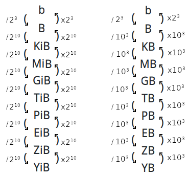
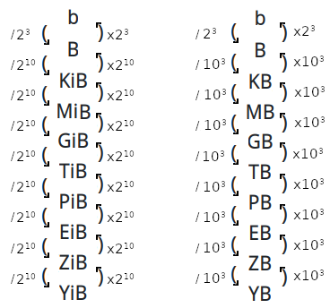

Medida de la información¶
Binary digit es una expresión inglesa que significa “dígito binario” y que da lugar al término bit.
El bit es la menor unidad de información.
Se puede imaginar un bit como una bombilla que puede estar en uno de los siguientes dos estados: apagada o encendida encendida. 1 bit (b) de información es un 0 o un 1.
1 byte (B) de información son 8 bits (octeto), se podría representar como 8 bombillas encendidas o apagadas
 

Cambio de unidades¶
Recordatorio: El producto de potencias de igual base es igual a la misma base elevada a la suma de los exponentes. El cociente de potencias de igual base es igual a la misma base elevada a la resta de los exponentes.
\(2^5 \times 2^2 = 32 \times 4 = 2^2\) ; se suman los exponentes
\(\frac{2^5}{2^2} = \frac{32}{4} = 8 = 2^3 \ \ \ \ \ \ \ \) ; se restan los exponentes
\(2^5 + 2^2 = 32+4 = 36\) ; en este caso no se suman los exponentes
\(2^5 - 2^2 = 32-4 = 28\) ; en este caso no se restas los exponentes
Ejemplos:
¿Cuántos bytes hay en 2GiB?
\(2GiB = 2 GiB \times \frac{ 2^{30}B}{GiB} = 2^{31}B = 2147483648 \ B\)
¿Cuántos bytes hay en 2GB?
\(2GB = 2GB \times \frac{10^9 B}{GB} = 2 \times 10^9 B = 2000000000 \ B\)
¿Cuántos GiB hay en 512MiB?
\(512MiB = 512MiB \times \frac{GiB}{2^{10}MiB} = \frac{2^9}{2^{10}} GiB = 2^{-1} GiB = 0.5 \ GiB\)
¿Cuántos GB hay en 512MB?
\(515MB = 512MB \frac{GB}{10^3 MB} = 0.512\ GB\)
¿Cuántos KiB hay en 64 MiB?
\(64MiB = 64 MiB \times \frac{2^{10} KiB }{MiB}= 2^{6} \times 2^{10} KiB = 2^{16} \ GiB\)
¿Cuántos EiB hay en 50 ZiB?
\(50ZiB = 50 ZiB \times 1024 = 51200\ ZiB\)
¿Cuántos ZB hay en 50 EB?
\(50 EB = 50 EB \times \frac{1 ZB }{10^3 EB} = 0.05 \ ZB\)
¿Cuántos MB hay en 64 MiB?
\(64MiB = 64 MiB \times \frac{2^{20} B}{MiB} = 2^{26} B \times \frac{MB}{10^{6}B} = \frac{2^{26}}{10^{6}} MB = 67.108864 \ MB\)
¿Cuántos TiB hay en 2TB?
\(2TB = 2 TB \times \frac{10^{12} B}{TB} = 2 \times 10^{12} B \times \frac{TiB}{2^{40}B} = \frac{2 \times 10^{12}}{2^{40}} TiB =1.81898940 \ TiB\)
La versión actual de «El Quijote» se emplean unos 2.000.000 caracteres ¿Cuánto MB ocuparía, sí suponemos que cada carácter ocupa 1 byte ?
\(2000000 (caracteres) \times \frac{B}{caracter} = 2000000 B \times \frac{MB}{10^6 B} = 2\ MB\)
¿Cuántos libros como «El Quijote» cabrían en un disco de 600 GB?
Pasamos los GB a MB :
\(600 GB \times \frac{10^3 MB}{GB} = 600000\ MB\)
Dividimos la capacidad del disco entre lo que ocupa 1 libro :
\(\frac{600000 MB}{2 MB} = 300000\ libros\)
¿Cuántas canciones de 8MB cabrían en un disco de 128 GB?
\(128 GB \times \frac{10^3 MB}{GB} = 128000\ MB\)
\(\frac{128000 MB}{8 MB} = 16000\ canciones\)